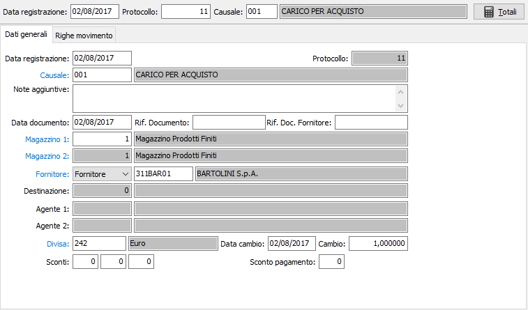

Tramite il pulsante Totali consente la visualizzazione dei totali del movimento suddiviso per unità di misura; vengono visualizzati il totale quantità, il totale valore in divisa ed il totale in controvalore.
Tramite il pulsante Totali consente la visualizzazione dei totali del movimento suddiviso per unità di misura; vengono visualizzati il totale quantità, il totale valore in divisa ed il totale in controvalore.Dati generali

DATA REGISTRAZIONE: data di registrazione del movimento di magazzino. Viene proposta la data di sistema, modificabile a cura dell’utente. Operando un doppio clic sul campo, viene richiamata la finestra video di ricerca movimenti di magazzino.
CAUSALE: inserire il codice della causale di magazzino corrispondente al movimento di magazzino che si vuole registrare. Sul campo sono attive le funzioni di ricerca (F9) e manutenzione (CTRL+W) sulla tabella stessa.
NOTE AGGIUNTIVA: campo note su più righe per inserire una eventuale descrizione aggiuntiva del movimento.
DATA DOCUMENTO: indicare la data del documento originario.
RIFERIMENTO DOCUMENTO: campo alfanumerico per inserire gli estremi di un documento di riferimento
RIFERIMENTO DOCUMENTO FORNITORE: campo alfanumerico per inserire gli estremi del documento del fornitore
MAGAZZINO 1: campo obbligatorio: codice del primo magazzino movimentato dalla registrazione in corso. Sul campo sono attive le funzioni di ricerca (F9) e manutenzione (CTRL+W) sulla tabella stessa.
MAGAZZINO 2: campo attivo solo nel caso in cui la causale di magazzino preveda la movimentazione di due magazzini: codice del secondo magazzino movimentato dalla registrazione in corso. Sul campo sono attive le funzioni di ricerca (F9) e manutenzione (CTRL+W) sulla tabella stessa.
TIPO CONTO: Indica la tipologia del conto utilizzato: clienti, fornitori, nessuno. Anche se lasciato vuoto, sarà valorizzato automaticamente al momento della conferma del codice.
CLIENTE/FORNITORE: inserire il codice del fornitore o del cliente indicato nel documento in fase di registrazione. Sul campo è attiva la ricerca (F9) sull’anagrafica clienti o fornitori. Sul campo sono attive le funzioni di ricerca (F9) e manutenzione (CTRL+W) sulla tabella stessa.
DESTINAZIONE: eventuale codice della destinazione diversa del cliente o fornitore, nel caso in cui il documento in fase di registrazione la preveda. Sul campo è attiva la ricerca (F9) sulla tabella destinazioni diverse.
DIVISA: codice della divisa del documento in fase di registrazione. Indica la divisa a cui si riferiranno i prezzi e gli importi della registrazione in corso. Se presente, viene proposta la divisa esistente nell’anagrafica del cliente o del fornitore. Sul campo sono attive le funzioni di ricerca (F9) e manutenzione (CTRL+W) sulla tabella stessa.
DATA CAMBIO: data a cui si riferisce il cambio contenuto nel campo successivo.
CAMBIO: coefficiente di cambio fra la divisa del documento e l’Euro.
SCONTI/MAGGIORAZIONI: campi numerici per inserire eventuali percentuali di sconto o maggiorazione. Vengono proposte automaticamente le percentuali presenti nell’anagrafica del cliente/fornitore modificabili dall’utente. Il numero di campi sconto/maggiorazione attivi dipende dal valore inserito in Configurazione base.
SCONTO PAGAMENTO: campo numerico in cui viene visualizzato l’eventuale sconto per pagamento. Il campo è modificabile dall'utente.
CODICE PROGETTO: Codice alfanumerico di 15 caratteri che definisce il progetto di riferimento. Sul campo sono attive le funzioni di ricerca (F9) ed accesso diretto alla tabella (CTRL+W). Il campo è presente solo se attiva la gestione progetti.
Completato l’ultimo campo, il cursore passa alla finestra video seguente.
Tramite il pulsante Totali consente la visualizzazione dei totali del movimento suddiviso per unità di misura; vengono visualizzati il totale quantità, il totale valore in divisa ed il totale in controvalore.